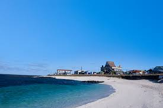

우도
제주시 우도면
기본정보
면적 5.9㎢, 인구 1,752명(2000)이다. 해안선길이 17㎞, 최고점 132m이다. 제주시 우도면을 이루는 섬으로 제주도의 부속도서 중에서 가장 면적이 넓다.

홈페이지:
우도사이트 주소
주소: 제주 제주시 우도면
애완견: 동반가능, 시각장애인 편의시설
주차: 장애인 주차장 있음(공영 주차장 내부)_무장애 편의시설 무료이용 가능
장기 여객선 운항
고등어 갈치 전복 많이 잡힘